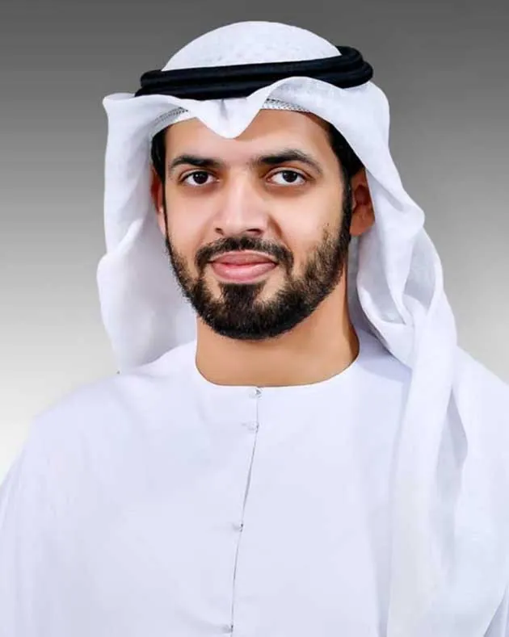
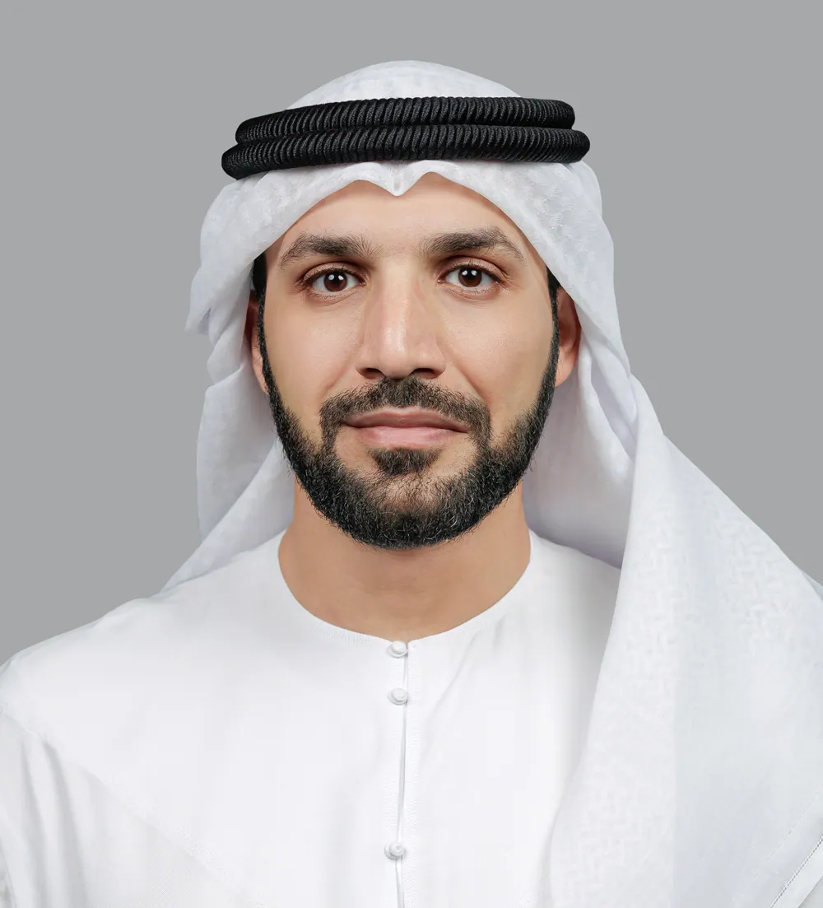

رؤيتنا
الريادة في العلوم الإنسانية والدراسات الإسلامية
جامعة محمد بن زايد للعلوم الإنسانية هي جامعة حكومية في إمارة أبوظبي، تهدف لتكون مركزاً أكاديمياً مرموقاً في مجال العلوم الإنسانية والاجتماعية والفلسفية.
الريادة في العلوم الإنسانية والدراسات الإسلامية
نسهم في بناء مستقبل معرفي إنساني مستدام ضمن بيئة تعليمية وبحثية متقدمة ترسّخ القيم الإنسانية وتعزز الهوية الوطنية، وتطوّر الكفاءات الفكرية والدينية القادرة على الابتكار والريادة عالمياً.
5 قيم تقود رسالة الجامعة
المحافظة على إرث الشيخ زايد واستلهام الدروس والعبر منه.
جعل قيم التسامح معياراً عملياً للمحتوى الأكاديمي والطلاب، واحترام التنوع والاختلاف، ونشر السلم والسلام، وتأصيل الاعتدال الفكري في المناهج التعليمية.
ترسيخ الأخوة الإنسانية ومبادئ العيش المشترك بين الشعوب والثقافات واستشعار عمقها الحضاري وأهميتها.
التواصل الثقافي والانفتاح على الأديان والثقافات الأخرى، والاطلاع عليها وتبادل الزيارات بين الجامعات العالمية ودور العبادة المختلفة في العالمين الإسلامي والغربي.
تحقيق مجتمع المعرفة والريادة في الابتكار المعرفي، وخلق جيل يحب العلم ويجلّه، ويتميز بأخلاقيات البيئة التعليمية، من النزاهة، والمسؤولية والعمل بروح الفريق.
اختر أولوية لعرض محاورها
تأسست جامعة محمد بن زايد للعلوم الإنسانية كجزء من رؤية قيادة دولة الإمارات العربية المتحدة لتوفير تعليم عالٍ عالمي المستوى سينتج خريجين متميزين سيساعدون في تحقيق أهداف التنمية في البلاد والمساهمة بشكل كبير في تقدم المجتمع الإنساني.
أنشأت الجامعة برنامجاً شاملاً يسعى لتزويد الطلاب بالمعرفة والمهارات والقيم المناسبة التي ستساعدهم على تحقيق النجاح وأن يصبحوا قادة في مختلف مجالات المساعي.
نحن نمكن طلابنا من التواصل وتبادل الأفكار بثقة باللغة العربية ولغات أخرى (الإنجليزية)، مما يمكنهم من الانخراط في الحوار والمساهمة بأفكار للمساعدة في تطوير المعرفة أو تطوير حلول تعالج التحديات الملحة للبشرية.

“في فضاءات المعرفة تشرق جامعة محمد بن زايد للعلوم الإنسانية في سماء دولة الإمارات منارةً علمية راسخة، وصرحًا معرفيا شامخًا، ومختبرًا بحثيًا ينهض برسالة حضارية عالمية، يصوغ المستقبل، ويحمل أمانة القيم والهوية الوطنية، عبر أجيال تتقن لغة الوعي، وتستوعب معارف العصر، وتحسن توظيف أدواته العلمية والتقنية.”
اقرأ الكلمة كاملة ←
“يطيب لي أن أرحب بكم في جامعة محمد بن زايد للعلوم الإنسانية، أول جامعة متخصّصة في العلوم الإنسانية في دولة الإمارات العربية المتحدة، تلك الجامعة التي استطاعت خلال فترة وجيزة أن تقوم بدور رياديّ وبارز في خدمة العلوم العربية والإنسانية بمختلف مجالاتها داخل هذه الدولة المباركة وخارجها.”
اقرأ الكلمة كاملة ←استكشف البرامج الأكاديمية وابدأ رحلة التقديم.
المصدر: الموقع الرسمي (https://www.mbzuh.ac.ae/ar/about-university) — نُسخ مباشرة بتاريخ 6 أكتوبر 2026